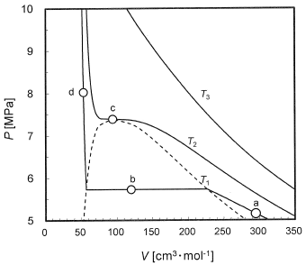

令和2年度 問28 有機化学及び燃料
二酸化炭素の温度T1＝293.15K、T2＝304.15K、T3＝323.15Kにおける等湿線を下図に示す。（V［cm3・mol-1］：モル容積、P［MPa］：圧力）
図中のa～d点に関する以下のA～Eの記述のうち、不適切なものの組合せはどれか。

- A、C
- B、D
- A、D
- C、E
- D、E
①
a点（V a 、P a ）ではP a V a /RT 1 <1である（R=8.31cm 3 ・MPa・mol -1 K -1 ：気体定数）。
②
b点では気体と液体の二相状態にある。
③
b点の圧力が温度T 1 の蒸気圧である。
④
c点は臨界点であり、気体、液体、固体が共存する。
⑤
d点は超臨界状態なので、圧縮には大きな圧力変化が必要である。
正答
⑤ d点は超臨界状態なので、圧縮には大きな圧力変化が必要である。
等温線は、ある温度における体積と圧力の関係を表した図です。圧力をかけるほど体積が小さくなっていることが分かります。点線より下側で凝縮が始まり、気体と液体が共存していることを表します。
b点は二相共存線上にあり、気体と液体の二相状態にあることが図から確認できます。また圧力は温度T1における蒸気圧であることを意味します。
c点は気体と液体の相転移が起こりうる境となる臨界点です。臨界点における温度を臨界温度、圧力を臨界圧力と呼びます。ただし気体、液体、固体が共存する三重点ではありません。
d点は超臨界状態ではありません。超臨界状態はどれだけ圧力を上げても液体にならないような臨界点（c点）よりも高い温度・圧力の領域を指します。